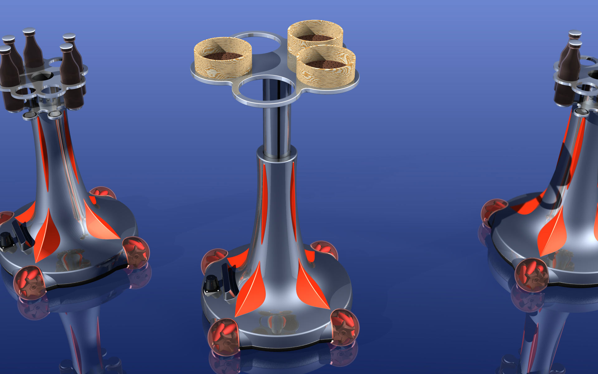
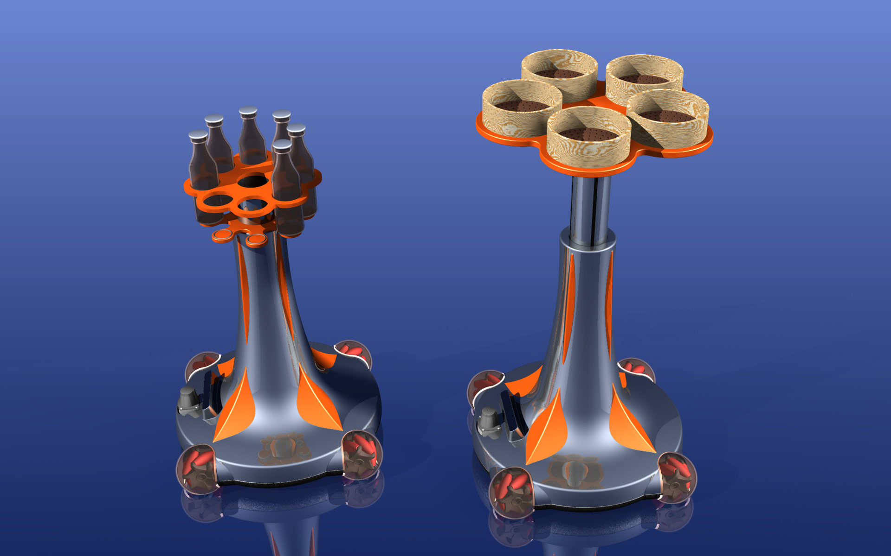

Luxury Technology Bamboo Bot
Service Robot
Luxury Technology Bamboo Bot
Serviceroboter
The Bamboo Bot is a new service robot which is used in restaurants to bring food and drinks directly to the table. It can as well be used on events or parties to serve the guests.
The design concept is based on the vision of a mobile bistro table. The serving height of the table is
individually adaptable from 650 to 950 mm and can be controlled wireless by WLAN or by sensors to serve
standing or seated guests. The table base ends below in a squarely arranged chassis that for the
protection is covered with four transparent spheres.
Complex sensors steer the robot certainly through ground-level rooms and immediately recognize people
and obstacles. The chassis is based on an omnidirectional moving platform that can also turn on spot.
The speed was adapted to the severe safety specifications. The service robot owns high-capacity
accumulators which guarantee a sufficient operation. In order to recharge the device automatically moves
to a battery charger.
Der Bamboo Bot ist ein neuartiger Serviceroboter, der in Restaurants eingesetzt wird, um Speisen und Getränke direkt an den Tisch zu bringen. Ebenso kann er auf Veranstaltungen oder Partys eingesetzt werden, um die Gäste zu bedienen.
Das gestalterische Konzept beruht auf der Vision eines fahrbaren Bistrotisches. Die Servierhöhe des
Tisches ist individuell von 650 bis 950 mm anpassbar und lässt sich per WLAN oder durch Sensoren
fernsteuern, um Gäste im Stehen oder Sitzen zu versorgen. Der Tischfuß endet unten in einem quadratisch
angeordneten Fahrwerk, das zum Schutz mit vier transparenten Kugeln abgedeckt ist.
Eine komplexe Sensorik steuert den Roboter sicher durch ebenerdige Räume und lässt sofort Personen und
Hindernisse erkennen. Das Fahrwerk basiert auf einer omnidirektional verfahrbaren Plattform, die auch
auf der Stelle drehen kann. Die Fahrgeschwindigkeit wurde an die strengen Sicherheitsvorgaben angepasst.
Der Service-Roboter besitzt Hochleistungs-Akkus, die einen ordentlichen Betrieb sicherstellen. Zum
Nachladen fährt das Gerät automatisch eine Ladestation an.


Images © Selić Industriedesign